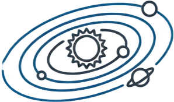
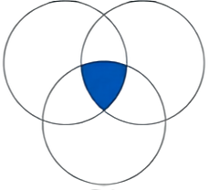

Paradigma
De la „ce trebuie să știe elevul/eleva” la „ce poate face cu ceea ce știe”
Model tradițional
transmitere de cunoștințe
Disciplina orientată spre reproducerea cunoștințelor.
Modelul curriculumului 2026
formare de competențe
Elevul/eleva devine participant activ: observă, investighează, modelează, validează rezultatele.
2019: ce trebuie să știe elevul/eleva


 2026: ce poate face cu ceea ce știe
2026: ce poate face cu ceea ce știe
2026: ce poate face cu ceea ce știeFizica – domeniu fundamental; astronomia – domeniu aplicativ și integrator, care oferă contexte autentice pentru legile naturii.
Elementele de noutate · 1–2
Disciplină unificată și rezultate măsurabile

Noutatea 1
Disciplină unificată
De la „Fizică” la „Fizică. Astronomie” (VI–XII)
2019
Astronomia – capitol izolat la finalul clasei a XII-a.2026
Astronomia – domeniu integrator în toate clasele.Ce înseamnă pentru manual
Contexte cosmice în unitățile existente, nu un capitol nou. Ex. clasa a VI-a: fazele Lunii (p. 19–20); clasa a X-a: sateliții în mișcarea circulară uniformă (p. 67).
Noutatea 2
Rezultate măsurabile
De la obiective generale la RÎ observabile
2019
Formulări vagi: „elevul/eleva poate explica…”.2026
Enunțuri concrete: elev/elevă + verb + obiect + context.Ce înseamnă pentru manual
Fiecare temă din manual pornește de la un rezultat al învățării; itemii, rubricile și secțiunea „Pot să…” derivă din verbul lui. Ex.: RÎ 2.6.2 „calculează… utilizând datele din tabele” (clasa a VI-a, p. 22).7/17
Elementele de noutate · 5–6
Contexte autentice și noile educații

Noutatea 5
Contexte autentice
Rubrica „Contexte de învățare” în fiecare unitate
2019
Aplicații – exemple la finalul temei.2026
Contexte cotidiene, digitale, colaborative – componentă structurală a unității.Ce înseamnă pentru manual
Lecția începe cu o întrebare autentică (Glosar, p. 11). Ex. clasa a VI-a: traversarea străzii, timpul de reacție (C6, p. 20); clasa a X-a: GPS, aplicații de fitness, cu variantă fără dispozitiv (p. 66).
Noutatea 6
Noile educații
Durabilitate, digital și IA, cetățenie globală, sănătate, antreprenoriat
2019
Integrare declarativă.2026
„Noua educație integrată” la nivel de unitate; teme cross-curriculare marcate în conținut.Ce înseamnă pentru manual
Integrare prin sarcini și criterii, nu prin teme separate. Ex. clasa a VI-a, unitatea 2: educația pentru sănătate – prevenirea accidentelor (p. 19); clasa a X-a, profil real, unitatea 3: dezvoltare durabilă (p. 72).9/17
Elementele de noutate · 7–8
Două spire și sincronizarea cu Matematica

Noutatea 7
Restructurarea spirelor
De la trei spire la două
2019
Trei reluări (VI · VII–IX · X–XII) și conținuturi de „Extindere”.2026
Spira gimnaziului (VI–IX, intuitiv-experimentală) și spira liceului (X–XII, aprofundare).Ce înseamnă pentru manual
Fără reluări „de la zero”: în clasa a X-a vectorii se reactualizează din clasa a VII-a și se aplică (Tabel de sinteză, p. 20).
Noutatea 8
Sincronizarea cu Matematica
Instrumentul matematic să fie deja predat
2019
Fizica cerea uneori instrumente nepredate încă.2026
Conexiuni explicite cu Matematica în fiecare unitate.Ce înseamnă pentru manual
Se verifică programa de Matematică a clasei. Ex. clasa a VI-a: „Planul de coordonate” în semestrul I, sincron cu graficele mișcării – propunere acceptată, de negociat (p. 4).10/17